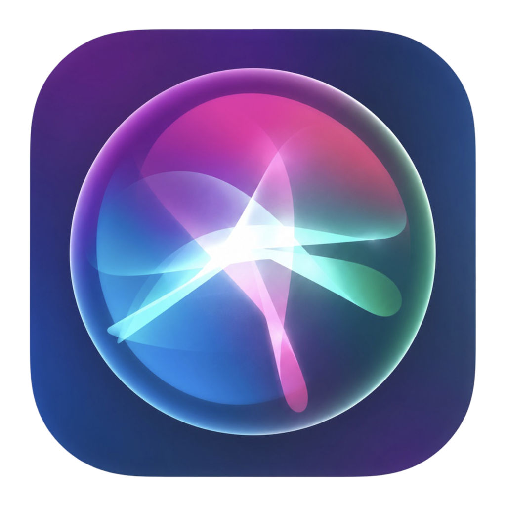
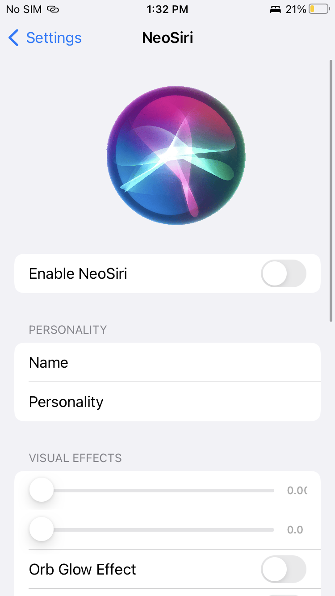
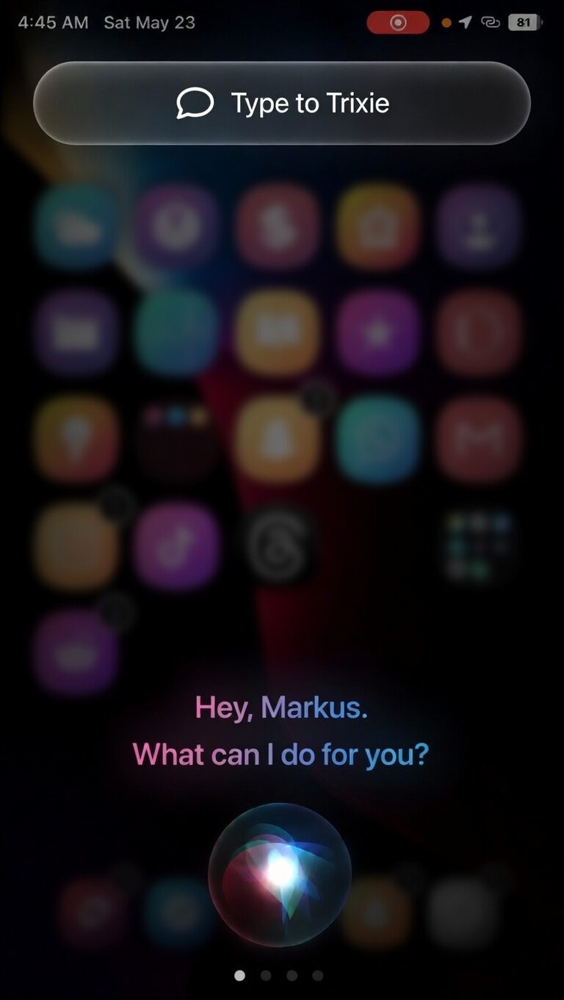
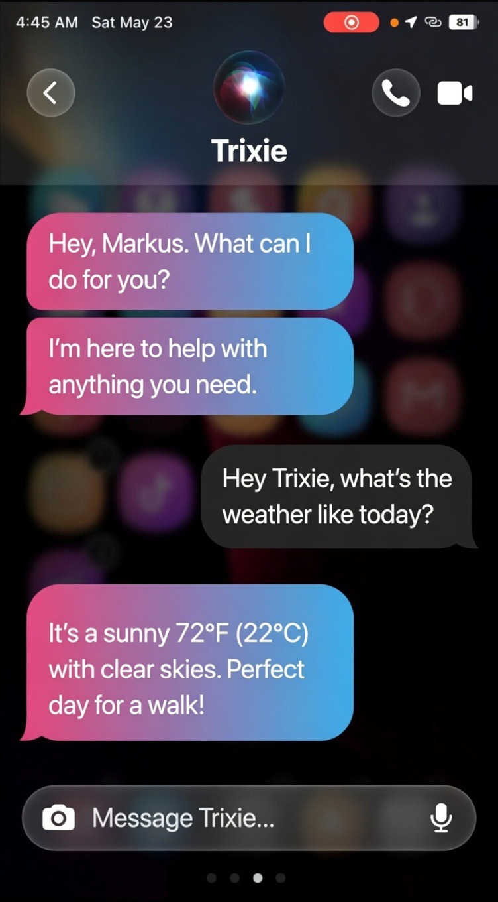

Version 1.0
• Initial public release
• Beautiful new Siri color themes
• Optimized performance

A modern reimagination of Siri
NeoSiri completely transforms the Siri interface with vibrant gradients, smooth animations, and a fresh modern aesthetic. Say goodbye to the old look — experience Siri like never before.



| Developer | Optical Raze Inc. |
| Version | 1.0 |
| Bundle ID | com.opticalraze.neosiri |
| Compatible with | iOS 15.0 - 16.x |
| Section | Tweaks |
• Initial public release
• Beautiful new Siri color themes
• Optimized performance